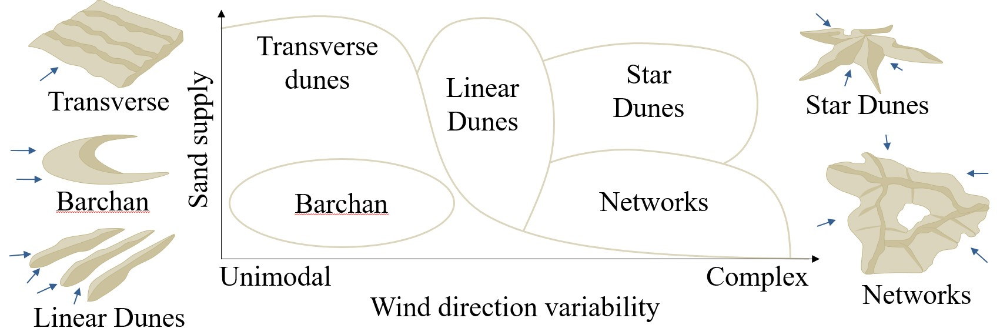
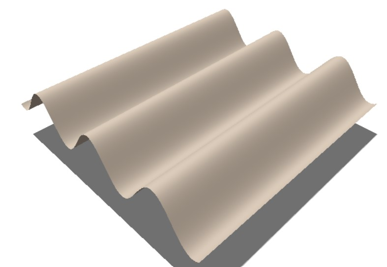
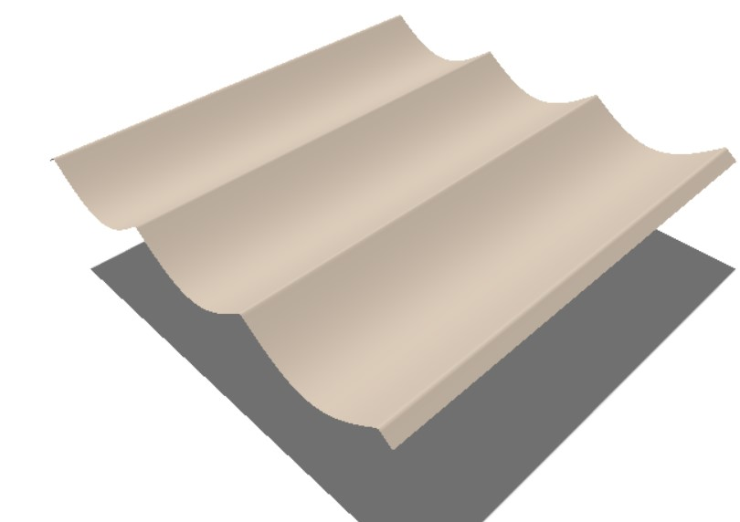

Creating our First Terrain Primitive
Simply using uniform fractal or multifractal noise is not enough for creating realistic terrains: we simply lack the variety found in real terrains. The compact procedural aspect of noise functions remains interesting - we are however limited by our ability to design a function that represents the desired landforms. In this part we will see how to design such shapes only using basic mathematical tools.
The core idea of this chapter is that procedural heightfields are not limited to noise: we can use other functions, such as trigonometric functions (cos, sin, tan) as well as geometric skeletons (explained in a bit). You may think of all of these as 1D or 2D functions of different shapes that we will combine together using simple operators such as addition and multiplication, to achieve a desired appearance. In concrete terms, we will design terrain primitives, and later combine them together to create a large-scale terrain.
This may still be a little abstract - Let's take an example: How about creating sand dunes? 🏜️
Designing Transverse Dunes
Sand dunes are a very good and educational example when it comes to creating terrain primitives. For those not familiar with how sand dunes look like, the figure below recaps the most common shapes identified by geomorphologists.

Sand dunes emerge from the interplay between wind of variable strength and direction over time, sand, and bare bedrock underneath. Here we focus on transverse dunes, which exhibit regular longitudinal patterns orthogonal to the wind direction.
The first observation is that the pattern is repeating over space at mostly regular intervals; the second observation is that the atomic repeating element is almost a straight line. If we take a side-view perspective, these dunes almost look like... a cosinus function. This is actually the only thing that we need to model such shape: we can use a 1D cosinus as our procedural heightfield function \(h\), taking as parameter the \(x\) or \(y\) coordinate of the point \(\mathbf{p}\):
\(h(\mathbf{p}) : \cos(\mathbf{p}_x)\)
function computeElevation(p) {
return Math.cos(p.x);
}
Put in 3D, it looks like this.

This is already quite good, although a bit 'hilly'. We are missing the sharp aspect of crests at the top of the dunes. This can done basically inverting the shape of our cosinus using an absolute value:
\(h(\mathbf{p}) : 1 - | \cos(\mathbf{p}_x) |\)
function computeElevation(p) {
return 1 - Math.abs(Math.cos(p.x));
}
Which leads to the following 3D result. Notice how we managed to create sharp features using a simple absolute value. This trick is similar to the one used to create ridge noise.

This is already pretty satisfying, can we do better? The result is still lacking some irregularities: nothing is as straight and as regular in real life. Noise is a great tool for such task: it is increadibly useful to add variety and details on terrain primitives. There are several ways to do this: for instance a small layer of noise may be added at the top or bottom of the dunes, or a warp the input position may be used to to add irregularities to the crest directions. You may refer to the interactive example below to compare the different versions with various additional parameters.
For the rest, the only limitation is your imagination and your ability to picture the combination of different mathematical functions. It's fun to do but still require a bit of practice.
Tip
It is sometimes easier to visualize and design shapes in 1D rather than 2D or 3D: for that, Desmos is a great tool that I use regularly. Shadertoy is also a great source of inspiration.
Geometric Skeletons
The sand dunes example is good and all, but what if our landforms is not periodic but rather punctual? For instance, what if we want to design a single mountain peak, a hill, or a crater? For that, trigonometric functions may be a little less useful - we need another tool, which we refer to as geometric skeletons.
TODO: explain point, disk, and curve skeleton. Provide distance formula for all, and design a mountain primitive
Designing a Mountain primitive
Math function utilities
TODO: recap all useful math functions to design terrain primitives